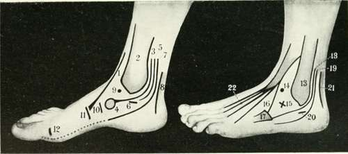

The Ankle And Foot
Description
This section is from the book "Landmarks And Surface Markings Of The Human Body", by Louis Bathe Rawling. Also available from Amazon: Landmarks and Surface Markings of the Human Body.
The Ankle And Foot
(Fig. XXVII, 1,2.) The external malleolus projects about 1 inch below the internal, and also lies on a more posterior plane. The ankle-joint corresponds in level to a point about 1/2 inch above the tip of the internal malleolus.
About 1 inch below and 1/2 inch in front of the styloid process of the external malleolus is the peroneal tubercle, (Fig. XXV, 20.) which separates the peroneus brevis above from the longus below. The two peronei tendons, when traced upwards, are found to pass behind the external malleolus. About 1 inch in front of the peroneal tubercle is the prominent styloid process of the base of the fifth metatarsal bone, (Fig. XXV, 17.) to which the peroneus brevis is attached. Between the peroneal tubercle and the base of the fifth metatarsal bone the cuboid bone may be felt, grooved on its outer and under aspect by the peroneus longus tendon. The tendon crosses the plantar aspect of the foot in a forward and inward direction, to be inserted into the outer aspect of the base of the first metatarsal bone. Immediately in front of the external malleolus there is a well-marked depression, (Fig. XXV.) which is bounded in front by a prominence due to the fleshy mass of the extensor brevis digitorum, and above by the tendon of the peroneus tertius.
Fig. XXV. The Region Of The Ankle And Foot
Internal Aspect Of Foot And Ankle
1. The tibialis anticus.
2. The internal malleolus.
3. The tibialis posticus.
4. The tubercle of the scaphoid. 5. The flexor longus digitorum.
6. The sustentaculum tali of the os calcis.
7. The flexor longus hallucis.
8. The tendo Achillis.
9. The head of the astragalus.
10. The joint between the scaphoid and the internal cuneiform,
11. The joint between the first metatarsal bone and the internal cuneiform.
12. The metatarso-phalangeal joint.
External Aspect Of Foot And Ankle
13. The external malleolus.
14. The head of the astragalus.
15. The head of the os calcis.
16. The peroneus tertius.
17. The base of the fifth metatarsal bone.
18. The peroneus brevis.
19. The peroneus longus.
20. The peroneal tubercle of the os calcis.
21. The tendo Achillis.
22. The extensor longus digitorum.
If the floor of this depression be examined, the head of the astragalus will be felt above and to the inner side, and the head of the os calcis below and to the outer side. (Fig. XXV, 15.) Between the two malleoli in front of the ankle-joint four tendons can be felt. The most prominent and the innermost is the tendon of the tibialis anticus muscle. (Fig. XXV, 1.)
External to this follow the extensor longus hallucis, the extensor longus digitorum and the peroneus tertius.Fig. XXV.
When the foot is well extended, the head of the astragalus can also be identified lying under cover of the extensor tendons.
Immediately below the internal malleolus is the sustentaculum tali, (Fig. XXV, 6.) grooved on its under aspect by the flexor longus hallucis tendon, (Fig. XXV, 7.) and between the sustentaculum and the internal malleolus the tibialis posticus and flexor longus digitorum pass. (Fig. XXV, 3,5)
The tibialis posticus tendon can be traced upwards behind the internal malleolus and downwardsto the scaphoid tuberosity, (Fig. XXV, 3.) to which process the tendon gains its main attachment. In front of the internal malleolus there is another depression, (Fig. XXV, 4.) which lies below the line of the tibialis anticus tendon, and here the head of the astragalus can again be felt, especially prominent when the foot is well everted. (Fig. XXV, 1.)
About 1 inch below (Fig. XXV, 9.) and in front of the internal malleolus the tuberosity of the scaphoid bone forms the most prominent bony point on the inner side of the foot, (Fig. XXV, 4.) and a line which joins the tip of the internal malleolus, the head of the astragalus, and the scaphoid tubercle, normally presents a slight upward convexity.
In flat-foot, the head of the astragalus undergoes a downward displacement, and the line uniting the three bony points becomes straight, or even downwardly convex.
A line drawn almost transversely across the foot from a point just behind the scaphoid tubercle indicates the level of the mid-tarsal joint.
(Fig. XXV, 10,11) In front of the scaphoid tuberosity, (Fig. XXV, 11,12) the internal cuneiform and the first metatarsal bones may be located and verified. Behind the ankle-joint, the tendo Achillis is placed, Fig 4, 8,21. the tendon being at its narrowest at a point about 1 1/2 inches above its insertion into the posterior part of the os calcis. When distended with fluid, the synovial membrane of the ankle-joint bulges outwards, so as to obliterate the depressions that normally lie between the tendo Achillis and the two malleoli.
Continue to: